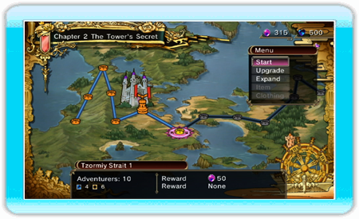
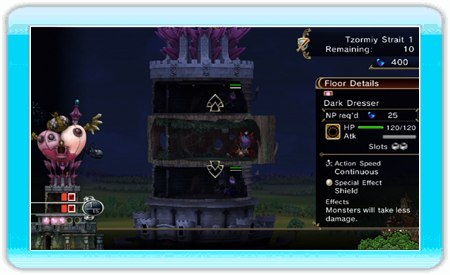
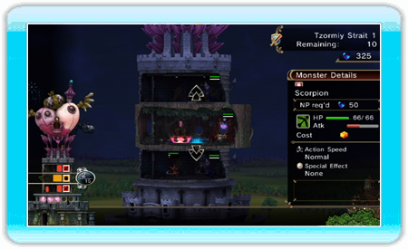
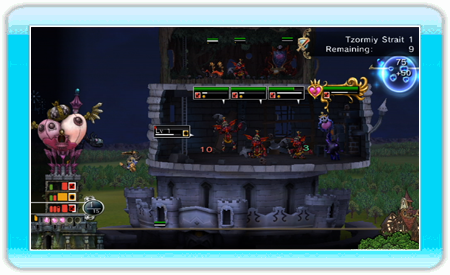
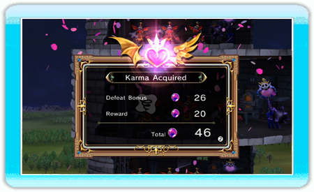
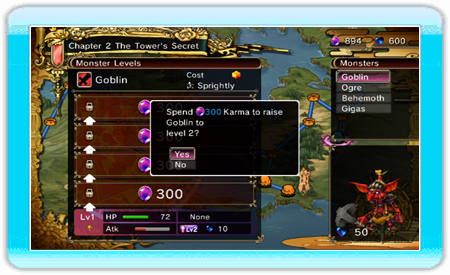

11 |
Conquistar el mundo (mecánica del juego) |
 |
|
El mundo de My Life as a Darklord está dividido en dos partes: el mapa y las fases en las que se desarrolla el juego. Antes de conquistar el mundo, tendrás que aprender todo lo posible sobre ambas partes.
Aquí es donde se elige la fase a invadir antes de entrar en combate. También podrás mejorar los monstruos, ampliar la torre y ver los objetos que posees. Si tienes ropa para Mira, podrás cambiar su atuendo en el mapa (esta opción no estará disponible si todavía no has conseguido ropa para ella).
Selecciona "Comenzar" para iniciar una fase. En cada fase tendrás que utilizar tu poder negativo (PN) para colocar pisos e invocar monstruos a tu torre. También puedes usar el PN para aumentar el nivel de los monstruos invocados si los has mejorado en el mapa.
1. Poner el plan en marcha Selecciona una fase a conquistar en el mapa para iniciar la batalla. 
2. Eliminar a los aventureros Usa tu PN para añadir pisos a la torre. 
Después de colocar pisos, usa el PN para invocar monstruos a la torre. 
Conseguirás más PN cuando los monstruos o los artefactos de los pisos acaben con los aventureros. 
3. Consigue karma con las victorias Si ganas la batalla, te apoderarás de la fase y recibirás una bonificación de karma. 
4. Amplía la torre y mejora tus monstruos Usa el karma obtenido para ampliar la torre y mejorar tus monstruos en el mapa. 
|
 |
 |
 |